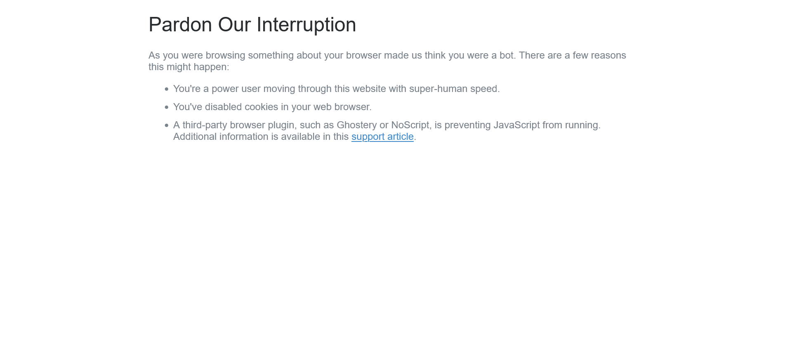

Started
Jan 28, 2024 10:43:56 pm
Ended
Jan 28, 2024 10:44:58 pm
Features Passed
0
Features Failed
4
Features
Scenarios
Steps
Timeline
Tags
| Name | Passed | Failed | Skipped | Others | Passed % |
|---|---|---|---|---|---|
| @author_Annapoorna | 1 | 5 | 0 | 0 | 16.667% |
| @regression | 1 | 5 | 0 | 0 | 16.667% |
System/Environment
| Name | Value |
|---|---|
| Engineer | Annapoorna Somayaji |
| Project | Virgin Games |
| os | Windows |
-
Login Functionality
22:43:59 / 00:00:34:560 Fail
Login Functionality
01.28.2024 22:43:59 01.28.2024 22:44:34 00:00:34:560 · #test-id=1As a user, I would like to be able to log in with valid credentialsFailVerify that the user cannot login with blank credentialsGiven I navigate to homepageWhen I navigate to login pageAnd I login with blank username "Hello" and password "how" credentialsThen I should be able to view the error message "Both your username and password are required"Step skippedcom.virgingames.steps.Hooks.tearDown(io.cucumber.java.Scenario)Verify that the user cannot login with blank credentials -
Login Functionality
22:43:59 / 00:00:34:555 Fail
Login Functionality
01.28.2024 22:43:59 01.28.2024 22:44:34 00:00:34:555 · #test-id=2As a user, I would like to be able to log in with valid credentialsFailVerify that the user cannot login with blank credentialsGiven I navigate to homepageWhen I navigate to login pageAnd I login with blank username "Hello" and password "how" credentialsThen I should be able to view the error message "Both your username and password are required"Step skippedcom.virgingames.steps.Hooks.tearDown(io.cucumber.java.Scenario)Verify that the user cannot login with blank credentials
-
Search Functionality
22:44:34 / 00:00:19:834 Fail
Search Functionality
01.28.2024 22:44:34 01.28.2024 22:44:54 00:00:19:834 · #test-id=17As a user, I would like to be able to search casino gamesFailUser should be able to enter search terms and view corresponding resultsFailUser should be able to enter search terms and view corresponding resultsGiven I navigate to homepageWhen I enter navigate to search optionAnd I enter search terms from sheet name "Sheet1" and row number "0"Then I am able to view search results containing all the letters in the search term from sheet name "Sheet1" and row number "0" in the resultStep skippedcom.virgingames.steps.Hooks.tearDown(io.cucumber.java.Scenario)FailUser should be able to enter search terms and view corresponding resultsGiven I navigate to homepageWhen I enter navigate to search optionAnd I enter search terms from sheet name "Sheet1" and row number "1"Step skippedThen I am able to view search results containing all the letters in the search term from sheet name "Sheet1" and row number "1" in the resultStep skippedcom.virgingames.steps.Hooks.tearDown(io.cucumber.java.Scenario)User should be able to enter search terms and view corresponding results
-
Search Functionality
22:44:34 / 00:00:19:834 Fail
Search Functionality
01.28.2024 22:44:34 01.28.2024 22:44:54 00:00:19:834 · #test-id=18As a user, I would like to be able to search casino gamesFailUser should be able to enter search terms and view corresponding resultsPassUser should be able to enter search terms and view corresponding resultsGiven I navigate to homepageWhen I enter navigate to search optionAnd I enter search terms from sheet name "Sheet1" and row number "0"Then I am able to view search results containing all the letters in the search term from sheet name "Sheet1" and row number "0" in the resultFailUser should be able to enter search terms and view corresponding resultsGiven I navigate to homepageWhen I enter navigate to search optionAnd I enter search terms from sheet name "Sheet1" and row number "1"Then I am able to view search results containing all the letters in the search term from sheet name "Sheet1" and row number "1" in the resultStep skippedcom.virgingames.steps.Hooks.tearDown(io.cucumber.java.Scenario)
-
@author_Annapoorna
6 tests
@author_Annapoorna
1 passed 5 failedStatus Timestamp TestName Fail 22:43:59 pm Verify that the user cannot login with blank credentials Login Functionality.Verify that the user cannot login with blank credentialsFail 22:43:59 pm Verify that the user cannot login with blank credentials Login Functionality.Verify that the user cannot login with blank credentialsPass 22:44:34 pm User should be able to enter search terms and view corresponding results Search Functionality.User should be able to enter search terms and view corresponding resultsFail 22:44:34 pm User should be able to enter search terms and view corresponding results Search Functionality.User should be able to enter search terms and view corresponding resultsFail 22:44:45 pm User should be able to enter search terms and view corresponding results Search Functionality.User should be able to enter search terms and view corresponding resultsFail 22:44:45 pm User should be able to enter search terms and view corresponding results Search Functionality.User should be able to enter search terms and view corresponding results -
@regression
6 tests
@regression
1 passed 5 failedStatus Timestamp TestName Fail 22:43:59 pm Verify that the user cannot login with blank credentials Login Functionality.Verify that the user cannot login with blank credentialsFail 22:43:59 pm Verify that the user cannot login with blank credentials Login Functionality.Verify that the user cannot login with blank credentialsPass 22:44:34 pm User should be able to enter search terms and view corresponding results Search Functionality.User should be able to enter search terms and view corresponding resultsFail 22:44:34 pm User should be able to enter search terms and view corresponding results Search Functionality.User should be able to enter search terms and view corresponding resultsFail 22:44:45 pm User should be able to enter search terms and view corresponding results Search Functionality.User should be able to enter search terms and view corresponding resultsFail 22:44:45 pm User should be able to enter search terms and view corresponding results Search Functionality.User should be able to enter search terms and view corresponding results
-
org.openqa.selenium.WebDriverException
1 tests
org.openqa.selenium.WebDriverException
1 failedStatus Timestamp TestName Fail 22:44:34 pm com.virgingames.steps.Hooks.tearDown(io.cucumber.java.Scenario) Login Functionality.Verify that the user cannot login with blank credentials.com.virgingames.steps.Hooks.tearDown(io.cucumber.java.Scenario) -
org.openqa.selenium.ElementNotInteractableException
1 tests
org.openqa.selenium.ElementNotInteractableException
1 failedStatus Timestamp TestName Fail 22:44:52 pm When I enter navigate to search option Search Functionality.User should be able to enter search terms and view corresponding results.When I enter navigate to search option -
org.openqa.selenium.NoSuchSessionException
4 tests
org.openqa.selenium.NoSuchSessionException
4 failedStatus Timestamp TestName Fail 22:44:44 pm And I enter search terms from sheet name "Sheet1" and row number "0" Search Functionality.User should be able to enter search terms and view corresponding results.And I enter search terms from sheet name "Sheet1" and row number "0"Fail 22:44:45 pm com.virgingames.steps.Hooks.tearDown(io.cucumber.java.Scenario) Search Functionality.User should be able to enter search terms and view corresponding results.com.virgingames.steps.Hooks.tearDown(io.cucumber.java.Scenario)Fail 22:44:53 pm And I enter search terms from sheet name "Sheet1" and row number "1" Search Functionality.User should be able to enter search terms and view corresponding results.And I enter search terms from sheet name "Sheet1" and row number "1"Fail 22:44:54 pm com.virgingames.steps.Hooks.tearDown(io.cucumber.java.Scenario) Search Functionality.User should be able to enter search terms and view corresponding results.com.virgingames.steps.Hooks.tearDown(io.cucumber.java.Scenario) -
org.openqa.selenium.NoSuchElementException
2 tests
org.openqa.selenium.NoSuchElementException
2 failedStatus Timestamp TestName Fail 22:44:10 pm And I login with blank username "Hello" and password "how" credentials Login Functionality.Verify that the user cannot login with blank credentials.And I login with blank username "Hello" and password "how" credentialsFail 22:44:14 pm And I login with blank username "Hello" and password "how" credentials Login Functionality.Verify that the user cannot login with blank credentials.And I login with blank username "Hello" and password "how" credentials